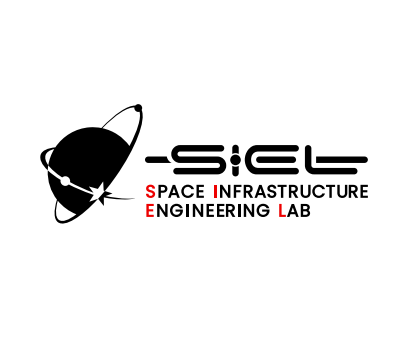

Space Robotics
宇宙環境における自律ロボットシステム， 認識・推定・制御および地上検証技術．

Space Robotics Researcher
東北大学 グリーン未来創造機構 グリーンクロステック研究センター 特任助教
東北大学 大学院工学研究科 航空宇宙工学専攻
宇宙インフラ工学研究分野・桒原研究室
宇宙ロボティクスを専門とし，月・惑星探査ローバーの走行力学とテラメカニクス，ならびに非協力宇宙機に対する軌道上サービス技術の研究開発に取り組んでいる．
宇宙環境における自律ロボットシステム， 認識・推定・制御および地上検証技術．
非協力宇宙機への接近，相対航法， 運動推定，デタンブリングおよび捕獲．
月・惑星探査ローバーの移動機構， 車輪設計および不整地走行性能．
車輪と土壌の相互作用，単輪試験， 数値シミュレーションおよびデータ駆動型モデル．